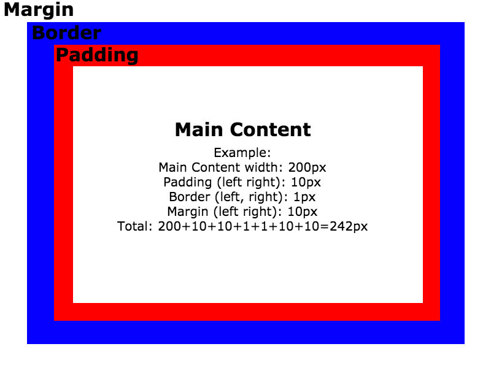
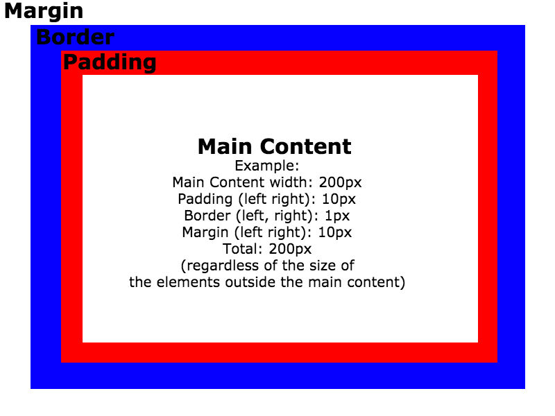

Box Model
Different tags in the html document have different display settings.
That means that they are positioned in a different way and in relation to the other tags in the page.
Therefore, some content might render next to the other or it might render while it is spanning throughout the whole page.
On the previous page, the links at the top of the page rendered on top of the rest of the text.
Also there was no spacing between the different lines and no intentation on the different elelents.
For example, <ul>, <ol> and <li> tags are positioned
inside other tags that by default span through the whole stretch of the page and therefore they prevent
the elements from rendering next to each other.
In order to resolve these challenges, we need to define attributes like:
- The width
- The height
- The padding
- The margin
- The borders
- The border's radius
- The display
of the particular elements that we need to work on and render properly.
In that way, we can accomplish a better positioning of the page's different elements. That, in accordance to the specificity between the tags, classes and ids can help us render things in the way we desire.
The box sizing
Even though the box model is conveniently assisting us to define size parameters for all of our page elements, it can be challenging because it requires from us to calculate the total size of the elements based on the sum of the margin, border, padding and width defined.
This can be resolved by using the "content-box" property. What this property does is that it maintains the width of an element regardless of the extra padding, borders and margin that might be there. See the picture below to get an idea.
Important Note: As we go over the different changes, we might need to do modifications on the existing CSS code in order to accomplish better rendering in all the different page elements.
The css code that we used is the following:
*,
*:before,
*:after {
-webkit-box-sizing: border-box;
-moz-box-sizing: border-box;
box-sizing: border-box;
}
header {
width: 20%;
padding: 10px;
}
section {
width: 80%;
padding: 10px;
}
h1 {
margin: 5px 0;
}
h2 {
margin: 5px 0;
}
p {
margin: 5px 0;
}
.boxModels{
width: 50%;
border: 1px solid black;
margin: 0 5px 0 0;
}
Previous Next